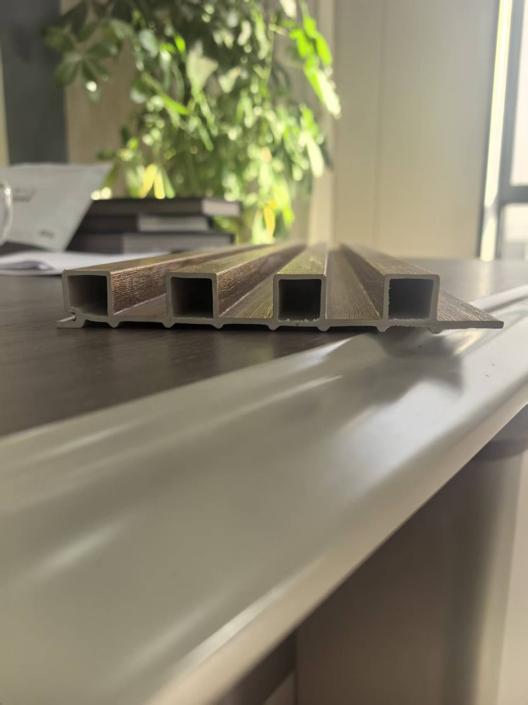

Painel ripado de PVC para parede: como escolher sem comprar só pela foto
Antes de comparar preços, confirme o material, a área útil de cobertura, o ambiente de instalação e os acabamentos do modelo escolhido.

“Ripado” descreve o relevo do painel, não garante que ele seja de PVC nem define seu uso. Para escolher uma linha de painéis, peça a ficha do modelo exato e compare largura útil após o encaixe, comprimento, acabamento, acessórios e instruções de instalação.
Parede de PVC, painel de PVC e painel ripado são a mesma coisa?
Não necessariamente. “Parede de PVC” é uma busca ampla. O painel ripado cria frisos; uma chapa marmorizada pode ser lisa e usar outro método de fixação. Painéis de PVC, WPC e outros materiais podem parecer semelhantes em uma fotografia. Por isso, peça composição, espessura, desenho do corte, largura total e útil, comprimento, peso e referência de cor do produto específico.
Use o catálogo de painéis de parede da Luvie (PDF) para selecionar referências visuais. Como o catálogo reúne diferentes famílias, confirme por escrito quais modelos são de PVC. A página da linha de PVC traz o caminho para solicitar amostras e detalhes do SKU.
Onde o painel ripado faz sentido?
Em uma parede de destaque de loja, recepção ou sala, a textura, a repetição do desenho e o acabamento dos cantos costumam ser decisivos. Em banheiros e cozinhas, é necessário examinar também respingos, temperatura, ventilação, juntas e estado da parede. A resistência à umidade da face do painel não transforma, por si só, todo o conjunto em uma parede impermeável.
Para uma área molhada, siga as instruções do sistema escolhido. O guia de instalação da ACP Professional mostra por que substrato e vedação mudam conforme a exposição. É uma referência técnica externa, não uma certificação dos produtos Luvie.
Como comparar preço por metro quadrado?
Não compare somente o preço por peça. Primeiro calcule a área útil instalada: largura útil × comprimento útil. Divida o preço da peça por essa área e acrescente perfis, adesivos ou fixadores, reserva para recortes, proteção da embalagem, frete, impostos e instalação, quando aplicável. Para uma importação, não trate um preço FOB e um preço entregue como equivalentes.
Exemplo apenas matemático: se uma peça cobre 0,40 m² úteis, uma parede de 10 m² precisa de pelo menos 25 peças antes de considerar cortes e aberturas. Essa medida não é uma especificação de produto Luvie. Peça o desenho do encaixe para saber a largura efetiva do SKU real.
O que pedir ao fornecedor antes de fechar o pedido?
- Ficha e amostra física do modelo exato, com material confirmado.
- Largura útil instalada, comprimentos disponíveis, tolerâncias e acessórios.
- Identificação de lote e procedimento para conferir diferenças de cor.
- Indicação de uso interno ou externo baseada na documentação do SKU.
- Instruções de fixação, preparação da base e acabamento de juntas e cantos.
- Relatórios de ensaio aplicáveis ao produto e ao país de destino, se exigidos.
- Proteção de faces e cantos para transporte internacional.
Perguntas frequentes
Painel ripado e painel WPC são iguais?
Não. “Ripado” descreve o formato. Confirme a composição e a aplicação de cada modelo.
Todo painel de PVC serve para banheiro?
Não presuma isso. Confira a exposição à água e o sistema completo de instalação do produto escolhido.
Posso usar o preço por peça para comparar fornecedores?
Somente depois de calcular a cobertura útil e incluir os acessórios e custos de entrega que entram no projeto.
Escolha o produto antes de pedir um preço genérico.
Envie o país de destino, o ambiente, as medidas aproximadas, a referência de acabamento e a quantidade estimada. A Luvie pode então confirmar modelos, amostras e documentos disponíveis para sua solicitação.
Conversar pelo WhatsApp